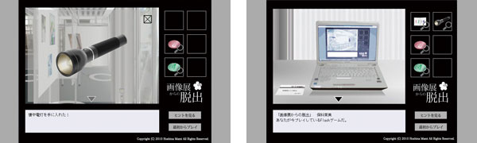

脱出ゲーム「画像展からの脱出」
2010年5月10日から23日にかけて、九州大学芸術工学部画像設計学科3年生の有志で、
九州大学サテライトルネットにて開催した展示会「brimage」に出展したFlashゲームです。


- 制作期間
- 2010年5月11日〜5月18日
- 使用ソフト
- Illustrator/Flash/Photoshop
- ジャンル
- 脱出ゲーム（ブラウザゲーム）
- コンセプト
- 1.展示会をより楽しんでもらえるゲーム
2.従来の脱出ゲームでは不可能な試み - 備考
- 単独制作
ゲームをプレイする
※但し、ゲームの性質上途中でヒントが不足します。
※展示会場でプレイすることに意味がある作りになっているためです。